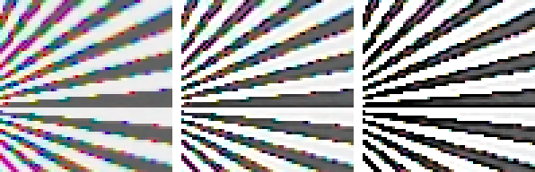
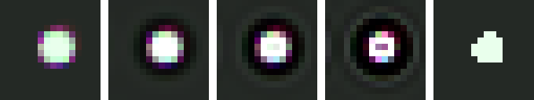
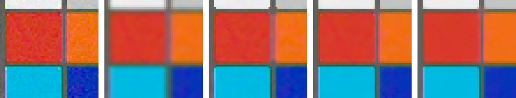

Chapter 7 ended with a confession: tone can make an image legible and likable, but it cannot make detail crisper or noise quieter. This chapter takes up those two jobs, and the first thing to say about them is that they are the same job run in opposite directions. Sharpening amplifies local differences; noise is local difference. Every operator here lives with that tension, and because the simulator knows the noiseless truth behind every capture, this chapter can do what real-world tutorials cannot: put a number on where each operator falls.
8.1Sharpening: the fake and the real thing
The oldest sharpener predates digital imaging by decades. Darkroom printers would sandwich a negative with a blurred positive copy of itself — an unsharp mask — and print through the pair. The trick deserves a slower look, because every sharpener since is built on it. A blur replaces each point with the average of its neighborhood. Where the image varies slowly, that average is nearly the point itself, so subtracting the blur cancels smooth regions to zero. At an edge the average cannot keep up: a pixel on the bright side is dragged down by its darker neighbors, a pixel on the dark side is dragged up by its brighter ones, and the subtraction leaves a signed residue — positive along one flank of the edge, negative along the other, silence everywhere else. That residue is a map of where the image changes quickly, drawn by the blur’s own failure to follow. The darkroom sandwich performed the subtraction in light; the digital version is a few lines of arithmetic:
code/pxp/detail.pydef unsharp_mask(image, amount=0.8, radius=2, sigma=1.2):
"""The oldest sharpener, from the darkroom via 1930s
lithography: subtract a blurred copy to isolate the detail, then
add the detail back in, scaled. Nothing about resolution
changes; edges gain overshoot, the eye reads the overshoot as
crispness, and past a sane amount the overshoot reads as a halo.
Applied to luminance, so color stays put while edges bite."""
bright = _luminance_planes(image)
blurred = gaussian_blur(bright, radius, sigma)
sharpened = [[bright[y][x] + amount * (bright[y][x]
- blurred[y][x])
for x in range(image.width)]
for y in range(image.height)]
return _rescale_luminance(image, bright, sharpened)
No new detail enters the image, because none can; what changes is the neighborhood of every edge, and the eye — which judges sharpness largely by edge contrast — is willingly fooled. The luminance decision is Chapter 7’s tone-curve decision again, settled the same way.

The unsharp mask fakes sharpness. Deconvolution pursues the real thing, and this is where the chapter pays Chapter 6’s debt. Lateral CA correction registered the color channels and left behind a symmetric halo — dispersion inside each channel’s band, a genuine blur that no warp can reach. But a blur is a convolution, and a convolution can in principle be run backwards, if you can name the kernel. Richardson–Lucy is the classic way to do it without inverting anything, one round of blur-compare-correct at a time:
code/pxp/detail.pydef richardson_lucy(plane, radius=2, sigma=1.2, iterations=10):
"""Deconvolution: undo a blur you can name.
Unsharp masking fakes sharpness; Richardson-Lucy pursues the
real thing. Given the point-spread function that blurred the
image, iteratively find the plane that, blurred by that PSF,
best explains what was observed — each pass blurs the current
estimate, compares against the observation, and corrects. The
catch is the noise: it was not produced by the PSF, but every
iteration explains it harder anyway, so the iteration count is a
sharpness/noise dial with no free setting."""
height, width = len(plane), len(plane[0])
floor = 1e-6
estimate = [row[:] for row in plane]
for _ in range(iterations):
blurred = gaussian_blur(estimate, radius, sigma)
ratio = [[plane[y][x] / max(blurred[y][x], floor)
for x in range(width)] for y in range(height)]
correction = gaussian_blur(ratio, radius, sigma)
estimate = [[estimate[y][x] * correction[y][x]
for x in range(width)] for y in range(height)]
return estimate
Set loose per channel on Chapter 6’s corrected corner dot, with a Gaussian of σ = 0.9 standing in for the unnamed dispersion kernel, Richardson–Lucy turns its iteration count into a dial worth watching end to end:

The moat is not a bug in our implementation. Richardson–Lucy trusts the PSF it is given and the observation it is shown; here the PSF was a guess, and the docstring already named the other catch. Astronomy — where the PSF is measured from actual stars and long exposures starve the noise — is where RL earned its reputation. Photography can usually offer it neither, and that gap, more than any implementation detail, is the distance between the second panel and the fourth.
8.2Noise reduction: a ladder with a number on every rung
Chapter 2 established what noise is — mostly photon arrival statistics, tamed only by the square root of the photon count — and Chapter 7’s sidebar showed the aristocratic fix: collect more photons. Every software denoiser is for when you cannot. All of them share one idea, average things that should agree, and the entire art is in deciding what “should agree” means. Each answer is a rung on a ladder this section climbs with a starved capture: one tenth the metered exposure, gain ×10, the recipe for a high-ISO frame.
The bottom rung answers “my neighbors should agree with me” and averages them under a Gaussian bell. The flaw is out in the open: edges are neighbors disagreeing for a reason, and the blur averages them anyway. One rung up, the median filter takes the same neighborhood and replaces arithmetic with rank order:
code/pxp/detail.pydef median_filter(plane, radius=1):
"""Each pixel replaced by its neighborhood's middle value.
No averaging at all — the output is always a value that actually
occurred nearby — which is why the median annihilates salt-and-
pepper outliers that would smear through any weighted mean, and
why it keeps a clean step edge bit-exact: the middle value on
either side of the edge is the side's own value."""
height, width = len(plane), len(plane[0])
out = []
for y in range(height):
row = []
for x in range(width):
neighborhood = []
for dy in range(-radius, radius + 1):
for dx in range(-radius, radius + 1):
neighborhood.append(_at(plane, x + dx, y + dy))
neighborhood.sort()
row.append(neighborhood[len(neighborhood) // 2])
out.append(row)
return out
The third rung is Chapter 7’s bilateral filter wearing a different hat. Built there to split lighting from texture, it is more often deployed as a denoiser: average neighbors, discounted by how much their values differ from yours, so averaging stops at edges. Its weakness is the pixel it trusts: a single noisy value decides which neighbors “resemble” it, and at low signal that judgment is itself noise.
The top rung fixes the judgment by widening the evidence from one value to a whole neighborhood. That is Non-Local Means:
code/pxp/detail.pydef nlm(plane, patch_radius=1, search_radius=5, strength=0.1):
"""Non-Local Means (Buades, Coll & Morel 2005), from scratch.
The bilateral asked 'does this neighbor's value resemble mine?'.
NLM asks the deeper question: 'does this neighbor's whole
*neighborhood* resemble mine?' — comparing patches, not pixels,
so a noisy sample still finds its true peers by the texture it
sits in. Every pixel in the search window votes, weighted by how
alike the patches are; on repetitive structure (and images are
full of it) many far-flung witnesses agree, and the average of
many witnesses is Chapter 2's square-root law working for us.
The patch-difference weighting uses a rational falloff rather
than the paper's exponential — disclosed, as with the bilateral,
for exact agreement between the code tiers."""
height, width = len(plane), len(plane[0])
patch = range(-patch_radius, patch_radius + 1)
out = []
for y in range(height):
row = []
for x in range(width):
total, norm = 0.0, 0.0
for dy in range(-search_radius, search_radius + 1):
for dx in range(-search_radius, search_radius + 1):
distance = 0.0
for py in patch:
for px in patch:
gap = (_at(plane, x + px, y + py)
- _at(plane, x + dx + px,
y + dy + py))
distance += gap * gap
similarity = distance / (strength * strength)
weight = 1.0 / (1.0 + similarity)
total += weight * _at(plane, x + dx, y + dy)
norm += weight
row.append(total / norm)
out.append(row)
return out
That triple loop over search window and patch is also the point in the book where the two-tier contract stops being a formality. The reference implementation above visits every patch in an 11×11 window for every pixel: 24 seconds per channel at this chapter’s small figure size, which extrapolates to more than a day for a 24-megapixel frame. The pipeline twin keeps the search-offset loop in Python and moves everything inside it to whole-array arithmetic, in the reference tier’s accumulation order — the same bits, fifty times sooner.
Patent note
Non-Local Means is published, open, and safe to implement — what you see above is the paper’s core algorithm. The same is true of BM3D, the block-matching successor that dominated benchmarks for a decade, but some commercial derivatives and optimizations of it are patent-encumbered; a reimplementer should stay with the published papers. This book’s ladder stops at NLM, which is the last rung where the whole mechanism fits on one page.
Here is the ladder measured, every rung against the noiseless truth the simulator provides — first over the whole frame, then over the flat patch interiors where noise actually lives:
| denoiser | PSNR, whole frame | PSNR, flat regions |
|---|---|---|
| (noisy input) | 25.13 dB | 30.95 dB |
| Gaussian blur | 24.44 dB | 31.82 dB |
| median | 26.06 dB | 32.75 dB |
| bilateral | 26.42 dB | 35.32 dB |
| NLM | 26.37 dB | 37.42 dB |
The two columns tell different stories, and both are worth reading. In the whole-frame column the Gaussian blur scores below the noisy input — on a chart full of edges it destroys more signal than noise — and bilateral and NLM finish in a statistical tie, because whole-frame error is dominated by edge pixels that no denoiser repairs. The flat-region column is where denoisers actually work, and there the ladder opens up rung by rung: the bilateral buys 4.4 dB over the noisy input and NLM buys 6.5, a clear two-decibel win at the top. One number per algorithm would have hidden all of that, which is why denoising papers report results on regions as well as whole frames.

Two disclosures close the section. First, parameters: the bilateral and NLM run at their best settings for this capture — their strengths swept against the ground truth — because a ladder whose top rungs are mistuned proves nothing. Second, placement: these denoisers ran on the displayed image, where the chapter could show every step, but real pipelines denoise early — on raw data, before demosaicing spreads each noisy sample into its neighbors — and Chapter 2’s other lesson still applies there: the noise is signal-dependent, so real denoisers scale their thresholds with brightness. Beyond NLM the field belongs to BM3D and then to learned denoisers, which won by making “what should agree” a question answered from millions of photographs instead of a formula; their mechanism no longer fits on a page, and a page is where this book draws its line.
The image is now as good as it is going to get: geometrically corrected, colorimetrically labeled, tonally shaped, sharpened and quieted. Everything that remains is packaging — and packaging, it turns out, is a final round of deliberate information loss with its own beautiful machinery. Chapter 9 scales the image, throws away half the color (in a way nobody can see), and encodes what is left into the thirty-year-old bitstream every device on earth can read: a JPEG, built from scratch.